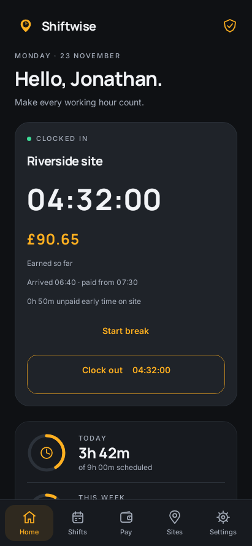
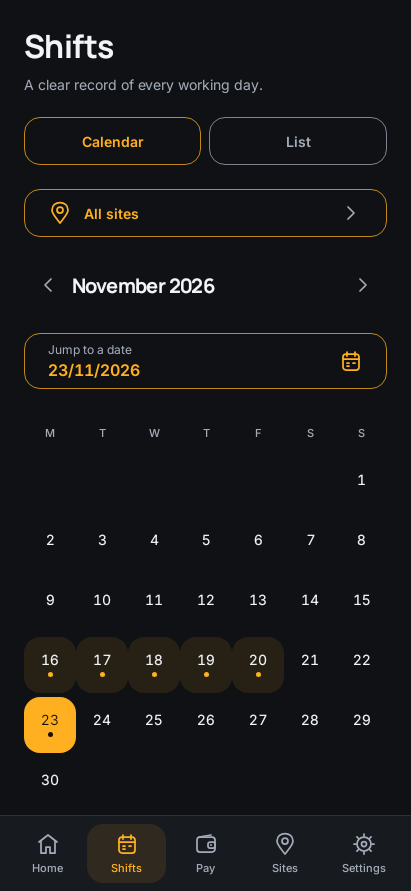
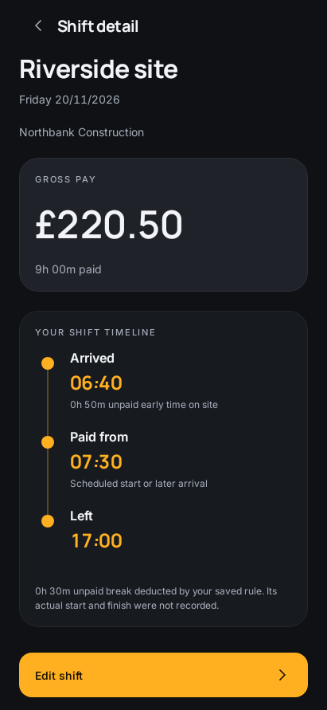
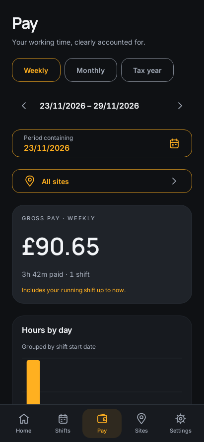
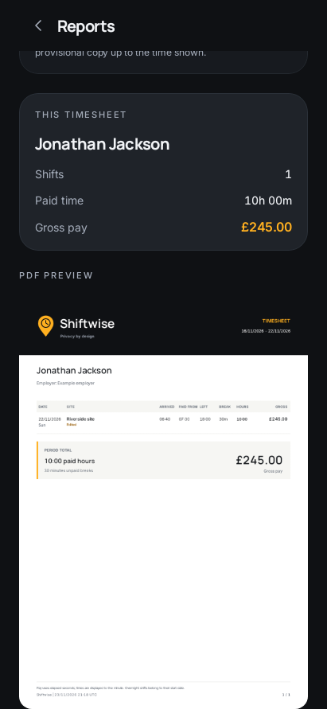
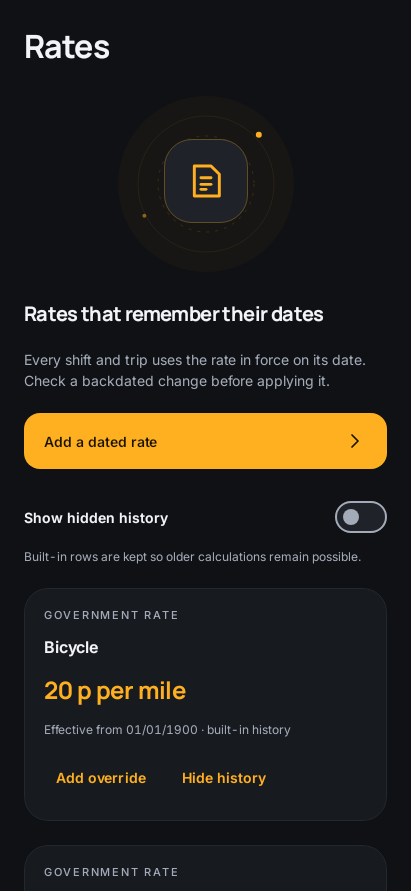
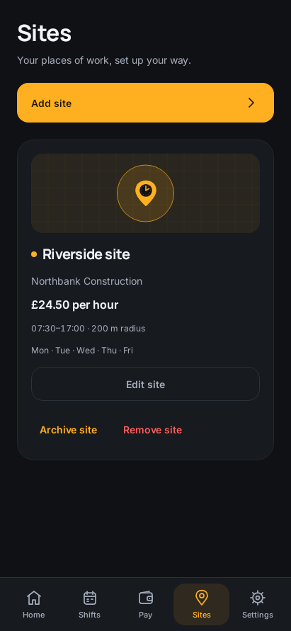
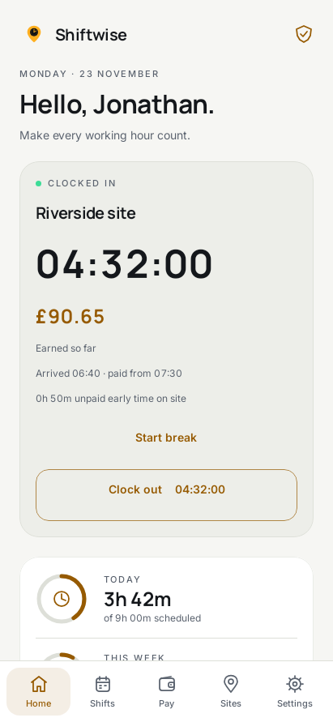

A good day's work. Every hour counted.
Shiftwise keeps your working hours, sites and pay together on your phone. It notices when you reach site, records the real time you arrived, and shows what you have earned as the day goes on. At the end of the week it hands you a clean PDF timesheet.
It is built for UK hourly and day-rate workers: construction, agency work, trades and shifts. It is free, with no account, no adverts and no analytics, and your records stay on your phone.
Download for AndroidHow to install
- Version 1.0.1
- Android 10 or later
- 54 MB
Free, with nothing to unlock. No adverts, no account with the developer, no tracking. Compare or read the release notes.
Chrome may say the file might be harmful. It shows this for app files that do not come from Google Play. Choose Download anyway.

- No advertsNone in the app and none on this site.
- No accountOpen it, add your site and start work.
- UK pay toolsOvertime, bank holidays, mileage rates and CIS.
- Honest recordsEvery correction keeps the original and a reason.
A look inside
These are the real screens, drawn by Shiftwise's own screen tests with a made-up site and week of work. Swipe or scroll sideways to see them all.







How it works
Set up a site once. After that, your working day adds itself up.
Choose your site
Drop a pin, set the arrival radius, and add your rate and working hours. Every site can have its own.
Clock your day
When you arrive, Shiftwise asks. Ignore it for five minutes and it records your real arrival time. Manual clocking is always there too.
Hand in your hours
Check the timeline and your pay, then save a PDF timesheet or a CSV. Corrections keep the original and a reason.
Everything is in, and all of it is free
Nothing below is held back for a paid tier, because there is no paid tier.
Clocking
- Arrival prompts by GPS
- Shiftwise notices when you reach a site, asks first, and confirms your real arrival time if you don't answer within five minutes.
- Early for a brew?
- Your arrival and your paid start are shown apart. By default pay starts at your scheduled time, and the early minutes are shown as unpaid.
- A grace period for leaving
- Pop off site and come back within the grace time, ten minutes unless you change it, and the same shift carries on.
- Always in reach
- Manual clocking, breaks, a notification while you work, two home-screen widgets and a quick-settings tile.
Records you can explain
- Calendar and list
- Every recorded day by month or as a list, with site filters and a timeline for each shift.
- Corrections with reasons
- Add a missed shift or fix a time, and say why. The original clock times and every change stay in the history.
- Copy a week
- When the pattern repeats, copy a finished week in one tap.
Pay that adds up
- Hourly or day rates
- Your own pay period and week start, live earnings, and totals for each site, week, month and tax year.
- Overtime and enhanced rates
- Optional daily and weekly overtime, and weekend, night and regional bank-holiday rates, without counting the same minute twice.
- Real time, real money
- Overnight shifts and the clocks going forward or back are counted in real elapsed time, and money is rounded once per line.
Travel, mileage and CIS
- Travel time
- Optional paid travel and unpaid first minutes, set per site.
- Mileage
- Saved distances or a GPS-tracked journey, with HMRC car and van tiers by tax year, and motorcycle and bicycle rates.
- CIS and allowances
- Day allowances and CIS deductions at 20%, 30% or gross.
- Dated rates
- Government and pay rates carry the date they start. A backdated change shows exactly which shifts it affects, and by how much, before you apply it.
Timesheets and checks
- PDF and CSV
- A clean PDF timesheet with period and site totals, and a CSV with the exact times behind it.
- Supervisor sign-off
- Optional on-screen signatures, which clear themselves if the timesheet changes afterwards.
- Payslip check and photos
- Compare a payslip with what Shiftwise worked out, keep photos with a shift, and keep separate employers apart.
Private by design
- No account, no tracking
- No adverts, analytics or crash reporting. Your records stay in the app's private storage.
- Locked and backed up
- A PIN and your phone's fingerprint or face unlock, and password-encrypted backups to a folder you choose.
Your working day is your business
No account, no tracking
No sign-up, adverts, analytics or crash reporting. The developer receives nothing.
Clock events, not a trail
Shiftwise records when you arrive and leave a site, not everywhere you go. A route is kept only for a GPS mileage journey you start.
Backups you control
Android's cloud backup is off. Backups go only where you save them, with a password if you want one.
Installing and updating
Shiftwise is not on Google Play, so your phone asks a couple of extra questions the first time.
Download the app file
Tap Download on your phone. The file is called Shiftwise.apk and is about 54 MB. If Chrome says the file might be harmful, choose Download anyway.
Allow the install
Open the file. The first time, Android asks you to allow your browser to install apps. Allow it, go back and tap Install. If Google Play Protect steps in, choose More details, then Install anyway.
Updating later
Open Settings, Check for updates and tap Check now. If a newer Shiftwise is out, Download opens it in your browser; open the file and tap Update. Shiftwise keeps every shift, site and setting.
Version 1.0.1, released 24 November 2026. See the release notes, or check your download.
Questions
Is Shiftwise really free?
Yes. There is no paid version, no subscription and no adverts, and nothing in the app is locked.
Is it on Google Play?
No. Shiftwise is a personal project and is downloaded from this site as an Android app file. It needs Android 10 or later.
Why does it ask for location all the time?
Android only lets an app notice you arriving at or leaving a site while it is closed if it has location all the time. Shiftwise uses it to watch your saved site boundaries. If you would rather not allow it, manual clocking still works, and you can turn automatic clocking on later.
What about battery settings?
Set Shiftwise's battery use to Unrestricted so Android delivers clock events on time. On Samsung, also add it to Never sleeping apps. The app has guidance for Samsung, Xiaomi, OnePlus and Huawei. Android can still delay background events; opening Shiftwise catches up with anything it missed.
What if I arrive early or leave for lunch?
Your arrival is kept, but pay starts at your scheduled start unless you choose to be paid from arrival. The timeline shows the early, unpaid time. Leave and come back within the grace time and it stays one shift. Both can be changed per site.
Does it work without signal?
Yes. Clocking, sites, pay and timesheets all work offline. Maps and address searches need a connection, and so does the optional bank-holiday refresh from GOV.UK.
Can I fix a missed or wrong shift?
Yes. Add a shift, or change its times and breaks, and give a reason. The original clock times and the full history stay with it, and edited shifts carry a small mark in the app and on the timesheet, which you can hide in Settings.
What happens when HMRC changes a rate?
Add the new rate with the date it starts, in Settings, Rates. Older shifts keep the rate that applied at the time. If the date is in the past, Shiftwise shows which shifts and journeys change, and by how much, before you apply it.
How do I keep a safe copy of my records?
Open Settings, Backup and save a .shiftwise file somewhere you control, with a password if you like. You can also choose a folder for daily or weekly copies, and the newest ten are kept. Restoring shows a preview and asks before it replaces anything.
How do I get new versions?
Open Settings, Check for updates and tap Check now. Shiftwise asks GitHub only when you tap it. If a newer version is out, Download opens the file in your browser; open it and tap Update. Do not uninstall first: uninstalling removes the app's private records.
Who made it?
Shiftwise is made by Jonathan Jackson, an independent developer in the United Kingdom. It is not connected with HMRC, GOV.UK, your employer or any payroll company.
Make every hour count
Free, with no adverts and nothing to unlock. Made by the developer of several other free Android apps: see them all.